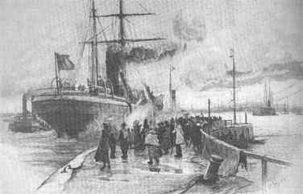

| |||||
www.amerikanetz.de
|  |
Netzwerk westfälische
Network Westphalian |
Our website is listed in
family research genealogy surname local linklist super big link list new world united states of america indiana missouri ohio emmigration immigration emigration imigration detmold herford neue welt westphalia america sister city cities archive archiv census 1880 owl guetersloh bielefeld kaunitz frithjof meissner verlerland verler seiten heimathaus kaunitz oesterwiehe suerenheide bornholte oelbach oelbachgemeinde heimatwasser kirchplatz nr.4 nr4 ostwestfalen ostwestfalenlippe lippe ostwestfalen-lippe detmold senne heimat heimatverein historie historisch geschichte heimatgeschichte heimatforschung forchung archiv archive delphos ohio usa auswanderung partnerschaft staedtepartnerschaft gemeinde owl guetersloh bielefeld ancestors roots germany emigrant emingrants 19th century history farmer historic research twin cities life vita jew jewish familiengeschichte genealogie ahnenforschung volkszählung volkszaehlung